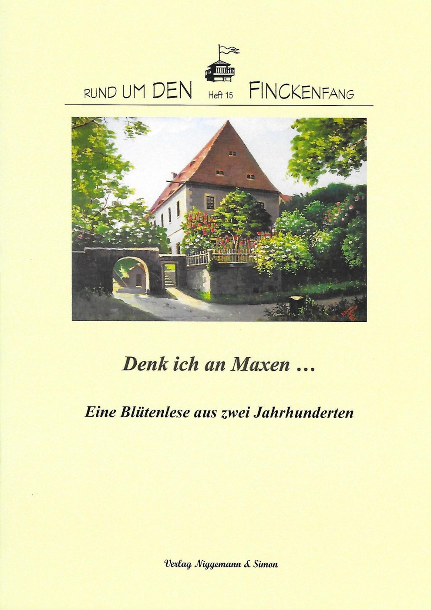

Rund um den Finckenfang · Heft 15
Denk ich an Maxen … Eine Blütenlese aus zwei Jahrhunderten
Herausgegeben von Gisela Niggemann-Simon und Michael Simon
1. Auflage · Maxen 2019 · 70 Seiten · 62 Abbildungen
ISBN 978-3-9810717-5-7
22,00 €
Zurzeit nicht lieferbar
Zum Inhalt
Denk ich an Maxen … ist eine Sammlung von zehn autobiografischen Zeugnissen aus der Zeit zwischen 1892 und 1967. Die meisten Beiträge handeln von den frühen Lebensjahren der Verfasser und Verfasserinnen, die im Abstand von mehreren Jahrzehnten auf ihr wechselvolles Dasein in der Vergangenheit zurückblicken. In ihren Erinnerungen spiegeln sich sowohl die Trivialitäten des Alltags wider als auch der Lauf der großen Geschichte, der den Menschen mit zwei Weltkriegen schwere Prüfungen auferlegt hat. Die kurzweilig zu lesenden Beiträge wurden reich bebildert und bieten viele Einblicke in die Geschichte unseres Dorfes.